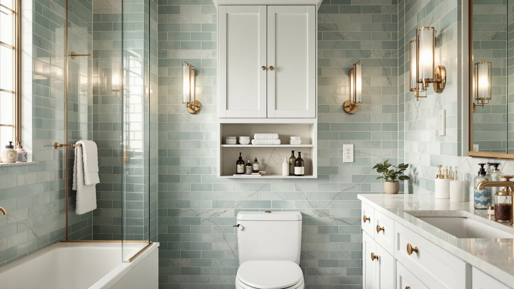

Best Over Toilet vs Floor Storage (2026) | Best Bathroom Storage


Things to Know Before You Buy
- Floor space is the deciding factor. Over-toilet units use vertical wall space and leave your floor clear, while floor storage trades square footage for capacity and access.
- Over-toilet units need an anchor. A tall, narrow frame is top-heavy, so install the included wall anchor. Skip it and the unit can tip when you reach a high shelf.
- Floor storage holds more weight. Cabinets and drawers carry bulky towels and bulk paper goods that thin over-toilet shelves cannot.
- Both are renter-friendly. Most over-toilet racks are freestanding, and carts and under-sink organizers attach to nothing.
- You can run both. Many bathrooms pair an over-toilet rack for display with under-sink organizers for the heavy, hide-away supplies.
The over-toilet vs floor storage choice comes down to one question: do you build up or spread out? Both approaches solve the same problem, a bathroom that never has enough room for towels, toilet paper, and the dozen bottles that collect around the sink. An over-the-toilet unit climbs the dead wall above your tank, while floor storage parks cabinets, carts, and bins at ground level where you can reach them without stretching.
You will hear strong opinions on both sides, and most of them skip the one factor that decides it: your floor plan. We compared the two approaches on build quality, price, and how they hold up to daily use in a real bathroom. Neither wins outright. The right call depends on how much floor you can spare, how high your ceiling runs, and who else shares the room.
Quick Answer
For small bathrooms and rentals where floor space is tight, over-toilet storage wins because it puts vertical room you already waste to work. For families, accessibility needs, and anyone who would rather not reach overhead, floor storage wins on capacity and easy access. In the over-toilet vs floor storage matchup, match the unit to your square footage first and your style second.
What is Over Toilet?
An over-the-toilet unit is a tall, narrow frame or cabinet that straddles the toilet tank and uses the wall space above it. Most run between 65 and 75 inches tall, with two or three open shelves up top and sometimes a small cabinet or basket section at hand height. The legs sit on either side of the toilet, so the footprint on your floor is close to zero. That is the whole appeal of the over-toilet approach: you store more without giving up a single square foot of walking room.
You will find three common builds. The cheapest are powder-coated steel etageres with wire shelves, usually under $50. Mid-range versions add wood-look shelving and a closed cabinet door to hide clutter. The priciest are full ladder-style cabinets that bolt to the wall. Assembly takes 20 to 40 minutes, and most units need a wall anchor for stability, since a freestanding six-foot frame over a hard floor can tip if someone grabs a high shelf. Weight capacity per shelf typically tops out around 20 to 40 pounds, so heavy items belong lower down.
What is Floor Storage?
Floor storage covers everything that sits on the ground: freestanding cabinets, rolling carts, drawer towers, under-sink organizers, and woven baskets. Instead of climbing the wall, these units spread your stuff across a low, wide footprint you can reach from a standing or seated position. This is the option that trades floor area for accessibility and load capacity.
The category is broad, so capacity ranges widely. A slim three-drawer cart holds a modest stack of washcloths and toiletries, while a four-foot linen cabinet swallows full-size towels, cleaning supplies, and bulk paper goods. Under-sink organizers, like the two-tier and pull-out trays we recommend below, reclaim the awkward space around your plumbing that usually goes to waste. Rolling carts add mobility, so you can wheel supplies to wherever you are working. The trade-off is square footage. A cabinet that runs 24 inches wide and 16 inches deep eats real walking space, which is fine in a roomy bathroom and a problem in a powder room. Build quality runs from flimsy plastic bins to solid wood cabinets that outlast the room itself.
Head-to-Head: Build Quality & Durability
Build quality splits along predictable lines. Over-toilet units carry a built-in stability problem: they are tall, narrow, and top-heavy, so a cheap one wobbles the moment you load the upper shelf. The fix is a wall anchor, which every decent over-toilet unit includes and which you should always install. Once anchored, even a budget steel etagere stays put for years. The usual weak point is the shelf hardware, with thin wire shelves bowing under a stack of folded towels.
Floor storage starts with a structural advantage. A low center of gravity means a cabinet or cart will not tip, anchor or not, which matters in a house with kids or pets. The materials also tend to be heavier and more forgiving, so a solid-wood or thick-MDF cabinet shrugs off the bumps and humidity that warp lightweight over-toilet shelving. The honest drawback is moisture at floor level. Carts and cabinets that sit near a tub or a leaky radiator pick up rust and swelling faster than anything mounted up the wall. For pure longevity, a well-built floor cabinet outlasts a budget over-toilet rack, but a quality anchored over-toilet unit closes most of that gap.
Head-to-Head: Price & Value
On price, the gap between the two narrows to almost nothing. Entry-level over-toilet etageres start around $35 to $50, and mid-range cabinets with a closed door run $70 to $130. Floor options cover a wider band: a three-drawer plastic cart can cost $25, the under-sink organizers we picked sit between $14 and $48, and a real linen cabinet climbs past $150. Dollar for dollar, a basic over-toilet unit gives you the most shelf space for the least money because it uses cheap vertical framing instead of a full cabinet box. Floor storage often wins on cost per usable cubic foot once you count deep drawers and closed cabinets. If your budget is tight and your bathroom is small, the over-toilet route is the cheaper way to add real capacity.
Head-to-Head: Use Experience
Daily use is where the choice gets personal. Over-toilet shelving puts your most-used items at or above eye level, which suits display and grab-and-go towels but turns awkward for anything heavy or anything you reach for while seated. You will stand on tiptoe for the top shelf, and that shelf sits directly over the tank, so a dropped bottle lands in the worst possible spot. Cleaning around the legs and behind the toilet also takes more patience.
Floor storage flips those ergonomics. Drawers and low shelves meet you at waist height, carts roll out of the way when you mop, and pull-out organizers bring back-of-cabinet items to the front with one tug. The cost is floor real estate and, in a busy bathroom, the occasional stubbed toe. Closed cabinets and drawers also hide clutter better than open over-toilet shelves, which broadcast every mismatched bottle. If you share a small bathroom and want surfaces to look tidy without daily styling, floor storage with doors is the calmer choice. If you want everything visible and within a step, over-toilet shelving keeps it in view.
When to Choose Over Toilet
Choose over-toilet storage when floor space is your scarcest resource. It wins for studio apartments, half-baths, RVs, and any bathroom where you can already touch both walls. Renters favor it because most units are freestanding, so you install nothing permanent and take it with you when the lease ends. It also suits people who want their towels and decor on display rather than hidden behind doors. Pick it if you are tall enough to use the upper shelves comfortably, if your ceiling clears seven feet, and if the wall behind your toilet can take a single anchor screw. Skip it if small children or unsteady adults use the bathroom, since reaching overhead near a hard floor adds risk. For most cramped bathrooms, an anchored over-toilet unit is the fastest capacity upgrade you can buy.
When to Choose Floor Storage
Choose floor storage when capacity and easy access matter more than floor area. It wins for family bathrooms, accessible setups, and rooms big enough to give up a couple of square feet. Drawers and cabinets hold heavier loads, keep clutter behind doors, and serve anyone who cannot or would rather not reach overhead. Under-sink organizers and pull-out trays are the smart starting point because they use dead space you already own without shrinking your walking room. Pick floor storage if you stock bulky items like full-size towels and bulk paper goods, if a wheelchair or walker uses the room, or if you want a cleaner-looking bathroom with everything tucked away. The one rule is to measure first. A cabinet that blocks a door swing or crowds the vanity creates a bigger problem than the clutter it solves.
Our Top Picks
If you land on the floor storage side, start with the space you already waste around your plumbing. These under-sink organizers add usable shelves and pull-out access without eating into your floor area, and they cost a fraction of a full cabinet.

Editor’s Pick
Kitstorack Under Sink Organizer 2
Our top floor pick for most bathrooms. The expandable two-tier frame fits around odd-shaped plumbing, and the steel build holds heavier bottles without sagging.
$45.99
Check Price on Amazon
Best Value
Sevenblue 3 Pack Under Sink
The best value here. You get three stackable organizers that flex to fit cabinets of different depths, so one kit handles both the vanity and the linen closet.
$28.99
Check Price on Amazon
Premium Choice
Sevenblue 2 Pack Under Sink
A compact two-pack for tight cabinets. The pull-out trays bring rear items forward, which makes it an easy add-on to a larger setup.
$13.99
Check Price on AmazonFrequently Asked Questions
Is over-toilet or floor storage better for a small bathroom?
Are over-the-toilet storage units safe and stable?
Does floor storage hold more than over-toilet storage?
Can I use both over-toilet and floor storage together?
Which is better for renters?
Final Verdict
With over-toilet vs floor storage, neither type wins in the abstract. The right one is whichever fits your room. Pick over-toilet shelving for small bathrooms, rentals, and walls you want to put to work, and pick floor storage for families, accessibility, and serious capacity. If you go the floor route, the Kitstorack Under Sink Organizer is the one we would buy first, since it reclaims wasted space around your plumbing without costing you a square foot of walking room.